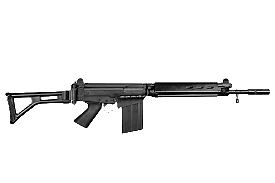

Gun

Fuzil Parafal
Calibre 7.62, versão reduzida do FAL(M964)
Coronha rebativel e cano encurtado, deixando o fuzil mais leve e melhor para o CQB. Capacidade de 20+1 munições entregue com 2 carregadores extras, Tampa com trilho PICATINNY(20mm) para acoplar reddot ou lunetas.
R$20,400